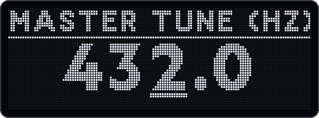

The master tune moves the whole Deluge away from 440 Hz, for example to 432 Hz, or to match an acoustic instrument or an external synth. At 440.0 Hz the firmware behaves exactly like 1.2.1. v2
2.1 Setting the master tune
Open Settings → Tuning → Master tune (Hz). The 7-segment display shows TUNE, then MTUN.
Turn SELECT to change the value. The cursor starts on the 1 Hz digit. Move it to the 0.1 Hz digit with the horizontal encoder.
Leave the Settings menu with BACK. The value is saved when you leave it (2.6).

Settings → Tuning → Master tune (Hz) at 432.0 Hz.
Range
415.3 to 466.2 Hz, that is ±1 semitone around 440 Hz
Steps
0.1 Hz
Default
440.0 Hz. At this value the firmware behaves exactly like 1.2.1. The only exception: recordings made at another tuning (2.3).
The range of the master tune, in Hz above and in cents below. Pitch is shown on a cents scale, so equal distances are equal musical intervals.
Baroque pitch, A = 415.0 Hz, lies just outside the range. 415.3 Hz, one semitone below 440 Hz, is possible.
2.2 What follows the master tune
Everything that sounds follows the master tune, and held notes change at once when you turn the value. The math is exact: the deviation is below 0.002 cents.
Everything that sounds follows the master tune. A recording remembers the tuning it was made in, so it is shifted only by the difference and never tuned twice.
Area
Behaviour
Synth and kit tracks
Waveforms, wavetables, samples, drum samples, FM including its modulators, DX7: all follow.
Audio clips
Follow. The pitch is shifted by time-stretch, so the tempo stays in sync.
Held notes
Retuned immediately when you change the value: synth, kit, CV and MIDI.
CV outputs
Follow and are output again immediately.
External MIDI devices
MIDI tracks and MIDI drums in kits send "Channel Fine Tuning" (RPN 1) on every channel used, with MPE on the member channels (2.4).
Drone
A tone set as a note follows the master tune (chapter 9). Set the master tune to match an external instrument, for example a volca keys, and the drone fits it (chapter 10).
Live input as oscillator
Unchanged: it already sounds in the current tuning, because the instrument is tuned to it.
2.3 Recordings keep their tuning
Tagged when recording: whatever you record on the Deluge at a tuning other than 440 Hz gets a small mtun chunk (12 bytes) with this tuning in its WAV file. That covers audio clips, resampling, sample recording and stem export.
Played back by the difference: the Deluge shifts a recording only by the difference to the current tuning. A recording made at 432 Hz sounds unchanged at 432 Hz, and at 440 Hz it is raised by exactly +31.77 cents.
Root note detection computes relative to the recording's tuning. Recording, detection, transposition and tuning together hit the target pitch to within 0.001 cents.
Other software skips the chunk and reads the same audio. Tested: Python wave, libsndfile (the basis of many DAWs and editors) and scipy.
Files without the chunk, for example samples from other sources, count as 440 Hz material. Some editors remove unknown chunks when they save a copy. Such a copy then counts as 440 Hz material too.
Converted samples: DelugeTuner writes the chunk too (8.3). A file whose mtun equals the current tuning plays exactly, without resampling.
2.4 External MIDI gear (RPN 1)
The Deluge sends the tuning as RPN 1, "Channel Fine Tuning" (6 control change messages), to MIDI tracks and MIDI drums in kits:
When
What is sent
You change the value
Immediately, to all channels the song uses. This also retunes held notes.
After play start
Once more, for devices switched on in the meantime. It goes out after the first notes, so it never delays them.
Before the first note on a channel
When the channel doesn't have the current tuning yet, for example after loading a song with new channels.
Shared channels
If several tracks or drums share a channel, it is tuned only once.
Never detuned
If no tuning other than 440 Hz has been active since power-on, nothing extra goes out. After a return to 440 Hz the devices are reset to 0 cents once.
The DIN MIDI output has no overflow protection. The Deluge therefore sends only while there is room and the rest a few milliseconds later. Even fast turning with many MPE channels produces no MIDI garbage.
Your device must evaluate RPN 1. Many synths and DAWs do, but not all.
RPN 1 covers −100 to +99.99 cents. Only at the two extremes, 415.3 Hz (−100.02 cents) and 466.2 Hz (+100.13 cents), a deviation of at most 0.15 cents remains.
A device switched on later gets the tuning a few milliseconds after the next play start. If it applies the tuning only at note-on, the very first notes of that run still play at 440 Hz.
2.5 CPU cost and sample libraries
Away from 440 Hz the Deluge resamples every sample voice, even an untransposed drum hit, just like a transposition by a fraction of a semitone.
Cost: with sinc interpolation a resampled stereo voice costs about six times as much as direct playback. Audio clips run through the time-stretcher all the time. That is the biggest item, noticeable only with many audio clips at once. Recordings made at the current tuning play natively.
Cheaper since v3: every retuned, transposed or time-stretched sample voice without a cache hit costs about 40% less than in 1.2.1.
Often small in practice: in the emulator "New Sitar Grii 10" costs only 0.2% more at 432 Hz than at 440 Hz, because its samples play transposed anyway.
Sound quality: the pitch shift uses the same interpolation and time-stretcher as transposing. Samples in "Pitch/speed independent" mode and audio clips therefore have the usual, very quiet time-stretch artifacts.
To remove the cost, convert your sample library once to the master tune with DelugeTuner (8.3). The samples then play directly again. On the test card in the emulator the whole card needed 34% less work without the sample cache, 6% less with it.
2.6 Where the setting is stored
In CommunityFeatures.XML in the root folder of the SD card, entry masterTune, in tenths of a Hz: 4320 is 432.0 Hz. It is saved when you leave the Settings menu.
The official firmware does not know the entry. It keeps it anyway and writes it back unchanged.
The earlier fork version c1.2.0 kept the value in flash memory. mastertune takes it over at the first start.